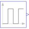

PulseGenerate pulse signal of type Real |

|
Information
This information is part of the Modelica Standard Library maintained by the Modelica Association.
The Real output y is a pulse signal:

Parameters (6)
| offset |
Value: 0 Type: Real Description: Offset of output signal y |
|---|---|
| startTime |
Value: 0 Type: Time (s) Description: Output y = offset for time < startTime |
| amplitude |
Value: 1 Type: Real Description: Amplitude of pulse |
| width |
Value: 50 Type: Real Description: Width of pulse in % of period |
| period |
Value: Type: Time (s) Description: Time for one period |
| nperiod |
Value: -1 Type: Integer Description: Number of periods (< 0 means infinite number of periods) |
Connectors (1)
| y |
Type: RealOutput Description: Connector of Real output signal |
|---|
Used in Examples (5)
|
Modelica.Clocked.Examples.Elementary.ClockSignals Simple example of a rotational clock with variable trigger interval and switching rotation-direction. |
|
|
Modelica.Clocked.Examples.Elementary.ClockSignals Simple example of conjunctive and disjunctive logical clocks, combining clock signals to derive new event driven clocks. |
|
|
Modelica.Electrical.Machines.Examples.DCMachines Test example: Cooling of a DCPM motor |
|
|
Modelica.Electrical.Machines.Examples.DCMachines Test example: Compare DCPM motors transient - quasi-static |
|
|
Modelica.Mechanics.Rotational.Examples Drive train with actively engaged one-way clutch |